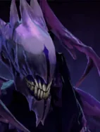

Fiend's Grip
Active Skill: Activates at Full Mana
Channeling Spell: Grabs a random enemy chess piece, rendering it unable to act and dealing pure damage.
| ★ | ★★ | ★★★ | |
|---|---|---|---|
| Damage | 75 | 100 | 125 |
| Channel time | 3 | 5 | 7 |
| Cooldown (s) | 6 | ||
| Mana cost | 100 | ||
Victims of Atropos often suffer excruciating agony from the vivid illusions in their nightmares.
Stats
| ★ | ★★ | ★★★ | |
|---|---|---|---|
| Health | 550 | 1100 | 2200 |
| Mana | 100 | 100 | 100 |
| Armor | 2 | 2 | 2 |
| Magic resistance | 10% | 10% | 10% |
| Attack damage | 40–50 | 80–100 | 160–200 |
| Attack interval (s) | 1.5 | 1.5 | 1.5 |
| Attack range | 400 | 400 | 400 |
| Move speed | 500 | 500 | 500 |
 Satyr · Fear
Satyr · Fear
- (2) When 2 or more enemies are within 200 range of a Satyr, they are feared for 3s (disarmed, silenced and wandering randomly). Each Satyr then has a random 4-8s cooldown. Magic-immune enemies are not affected.
 Faceless · Whisper of Darkness
Faceless · Whisper of Darkness
- (2) All allies become immune to negative effects during combat. Exceptions: Undead Plague, Mage magic-resistance debuffs and a few skill-specific effects still apply.
 Warlock · Soul Leech
Warlock · Soul Leech
At battle start, a Warlock at full HP gives up 25% of its current HP to gain +50 mana (max 100).
- (2) All allies heal for 5% of all damage they deal.
- (4) All allies get +20% more lifesteal (25% in total).
- (6) Warlocks steal max HP equal to 50% of all damage they deal: the target loses that much max HP and the Warlock gains it.